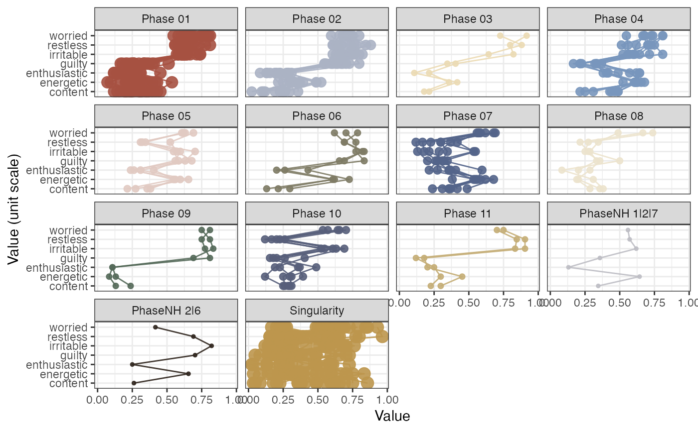

This function will extract phases (regions of attraction in phase space) based on a weighted RN object created with function rn.
The assumption is that coordinates in state space that are either close in terms of distance, or are re-visited with short recurrence times,
or with high-frequency, are regions of attraction for the system.
Usage
rn_phaseInfo(
RN,
maxPhases = NA,
minStatesinPhase = 2,
maxStatesinPhase = NROW(RN),
selectionMethod = c("degree", "strength", "closeness", "betweenness")[1],
inverseWeight = TRUE,
returnCentroid = c("no", "mean.sd", "median.mad", "centroid")[1],
removeSingularities = FALSE,
standardise = c("none", "mean.sd", "median.mad", "unit")[4],
returnGraph = FALSE,
doPhaseProfilePlot = FALSE,
plotCentroid = FALSE,
dimNames = NULL,
colOrder = FALSE,
phaseColours = NULL,
doSpiralPlot = FALSE,
doPhaseSeriesPlot = FALSE,
doPhaseDensityPlot = FALSE,
doPhaseSpacePojectionPlot = FALSE,
showPhaseSize = TRUE,
showEpochLegend = TRUE,
epochColours = NULL,
epochLabel = "Phase",
excludeVars = "",
excludePhases = "",
excludeTransients = FALSE,
excludePhaseNeighbours = FALSE,
excludeSingularities = FALSE,
excludeNonrecurring = TRUE,
alphaDensity = 0.4,
splitFacets = NA,
silent = FALSE
)Arguments
- RN
A matrix produced by the function rn
- maxPhases
The maximum number of phases to extract. These will be the phases associated with the highest node degree or node strength. All other recurrent points will be labelled with "Other". If
NA, the value will be set toNROW(RN), this will return all the potential phases in the data irrespective of their frequency/strength of recurrence (default =NROW(RN))- minStatesinPhase
A parameter applied after the extraction of phases (limited by
maxPhases). If any extracted phases do not have a minimum number ofminStatesinPhase+1(= the state that was selected based on node strength), the phase will be removed from the result (default =1)- maxStatesinPhase
A parameter applied after the extraction of phases (limited by
maxPhases). If any extracted phases exceeds a maximum number ofmaxStatesinPhase+1(= the state that was selected based on node strength), the phase will be removed from the result (default =NROW(RN))- selectionMethod
How will the most "important" node be selected? Should be the name of an igraph function that returns local (vertex) measures (default =
"degree")- inverseWeight
Whether to perform the operation
1/weighton the edge weights. The default isTRUE, if the matrix was weighted by a distance metric (weightedBy = "si") edges with smaller distances (recurring coordinates closer to the current coordinate) have greater impact on the node strength calculation used to select the phases. If the matrix was weighted by recurrence time (weightedBy = "rt") andinverseWeight = TRUE, recurrent points with shorter recurrence times will have greater impact on the strength calculation. IfweightedBy = "rf", lower frequencies will end up having more impact. (default =TRUE)- returnCentroid
Values can be
"no","mean.sd","median.mad","centroid". Any other value than"no"will return a data frame with the central tendency and deviation measures for each phase (default ="no")- removeSingularities
Will remove states that recur only once (nodes with
degree(g) == 1) (default =FALSE)- standardise
Standardise the series using
ts_standardise()withadjustN = FALSE(default = "mean.sd")- returnGraph
Returns all the graph object objects of the plots that have been produced (default =
FALSE)- doPhaseProfilePlot
Produce a profile plot of the extracted phases (default =
TRUE)- plotCentroid
Plot the centroid requested in
returnCentroid? (default =FALSE)- dimNames
A vector of titles to use for the dimensions. If
NULLthe values will be read from the attribute ofRN.- colOrder
Should the order of the dimensions reflect the order of the columns in the dataset? If
FALSEthe order will be based on the values of the dimensions observed in the first extracted phase (default =FALSE)- phaseColours
Colours for the different phases in the phase plot. If
epochColoursalso has a value,phaseColourswill be used instead (default =NULL)- doSpiralPlot
Produce a plot of the recurrence network with the nodes coloured by phases (default =
FALSE)- doPhaseSeriesPlot
Produce a time series of the phases as they occur with a marginal histogram of their frequency (default =
FALSE)- showPhaseSize
Show the number of states in each phase in the labels (default = TRUE)
- showEpochLegend
Should a legend be shown for the epoch colours? (default =
TRUE)- epochColours
A vector of length
vcount(g)with colour codes (default =NULL)- epochLabel
A title for the epoch legend (default =
"Epoch")- excludeVars
Exclude specific dimension variables by name. Leave empty to include all variables (default =
"")- excludePhases
Exclude Phases by their name (variable
phase_name). Leave empty to include all Phases (after the other exclusion arguments) (default ="")- excludeTransients
Should the category "Transient" be excluded from plots? (default =
FALSE)- excludePhaseNeighbours
Should the category "PhaseN" be excluded from plots? (default =
FALSE)- excludeSingularities
Should the category "Singularity" be excluded from plots? (default =
TRUE)- excludeNonrecurring
Should the category "Nonrecurring" be excluded from plots? (default =
TRUE)- alphaDensity
Alpha value for the density plots
- splitFacets
Integer value to indicate if sets of phases should be displayed in different facets? (default =
NA)- silent
Silent-ish mode (default =
FALSE)- doPhaseSpaceProjectionPlot
produce a 2D
umapprojection of the phases (default =FALSE)
Value
A data frame with information about the phases or a list object with data and graph objects (if requested).
The data frame contains the phase name, number and size, as well as properties of the prototypical state that was selected by the selection method, the node number/time (maxState_time), degree (maxState_degree), strength (maxState_strength).
Details
The method used for the identification of phases is on the properties of the RN object:
If weighted by distance
"si", the inverse distance will be used, which means higher weights correspond to closer states.If weighted by recurrence time
"rt", the inverse time will be used, which means higher weights correspond to faster recurrence times.
The procedure is as follows:
Identify the node with the highest strength
Identify the nodes that connect to this node
Identify the node with highest strength that does not connect to the node identified in step 1.
Repeat until criteria set in
maxPhases,minStatesinPhaseandmaxStatesinPhaseare triggered.
Examples
# Use the ManyAnalysts dataset to create a phase plot with default settings
data("manyAnalystsESM")
df <- manyAnalystsESM[4:10]
RN <- rn(y1 = df, doEmbed = FALSE, weighted = TRUE, weightedBy = "si", emRad = NA)
# This returns 6 phases which have minimally 2 states
rn_phaseInfo(RN, doPhaseProfilePlot = TRUE)
#>
#> ~~~o~~o~~casnet~~o~~o~~~
#>
#> Recurring states with high similarity will be considered a phase:
#>
#> selectionMethod = degree
#> maxPhases = 122
#> minStatesinPhase = 2
#> maxStatesinPhase = 122
#> inverseWeight = TRUE
#>
#> Recurring states will be grouped as a 'Phase ##', as transients (unstable phases) 'Transient ##', phase neighbours (state connects to more than 1 identified phase) 'PhaseNH ##', singularities (state recurs less often than minStatesinPhase) 'Singularity', or as not recurring 'Nonrecurring'.
#>
#> ~~~o~~o~~casnet~~o~~o~~~
#>
#> Found 11 phases with at least 2 states.

# Use min. number of states as the extraction criterion
rn_phaseInfo(RN, maxPhases = NA, minStatesinPhase = 7, doPhaseProfilePlot = TRUE)
#>
#> ~~~o~~o~~casnet~~o~~o~~~
#>
#> Recurring states with high similarity will be considered a phase:
#>
#> selectionMethod = degree
#> maxPhases = 122
#> minStatesinPhase = 7
#> maxStatesinPhase = 122
#> inverseWeight = TRUE
#>
#> Recurring states will be grouped as a 'Phase ##', as transients (unstable phases) 'Transient ##', phase neighbours (state connects to more than 1 identified phase) 'PhaseNH ##', singularities (state recurs less often than minStatesinPhase) 'Singularity', or as not recurring 'Nonrecurring'.
#>
#> ~~~o~~o~~casnet~~o~~o~~~
#> Warning: Phases with less than 7 states will be considered singularities.
#> Error in dplyr::filter(tmp_stray, !is.na(phase_num)): ℹ In argument: `!is.na(phase_num)`.
#> Caused by error:
#> ! object 'phase_num' not found